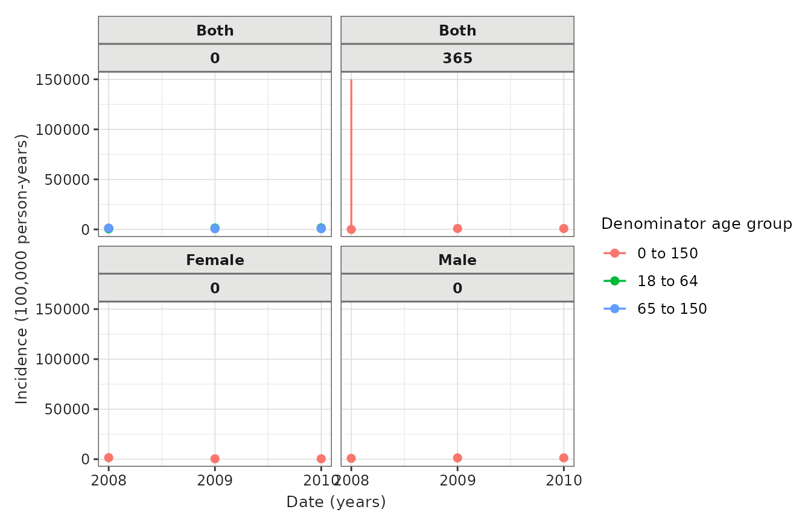
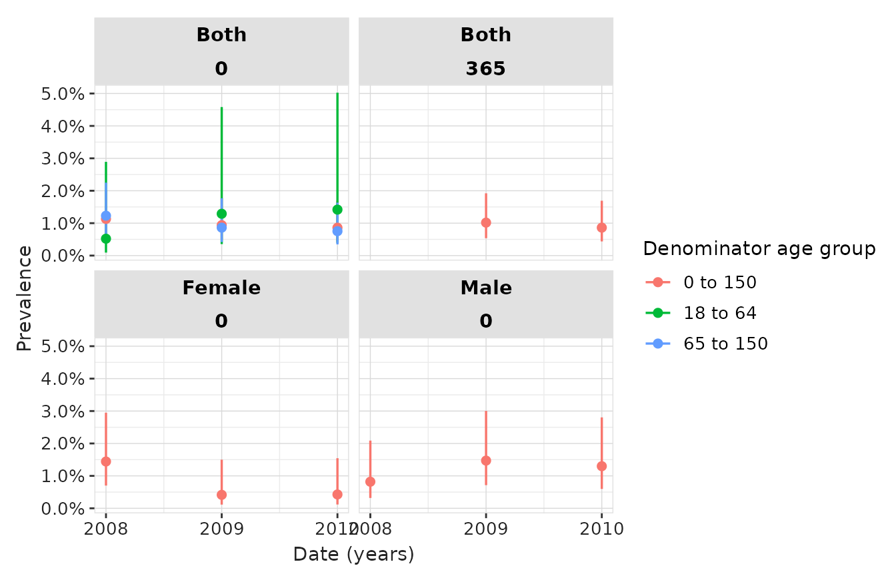

Population diagnostics
PopulationDiagnostics.RmdIntroduction
In this example we’re going to just create a cohort of individuals with an ankle sprain using the Eunomia synthetic data.
library(CDMConnector)
library(CohortConstructor)
library(CodelistGenerator)
library(PatientProfiles)
library(IncidencePrevalence)
library(PhenotypeR)
con <- DBI::dbConnect(duckdb::duckdb(),
CDMConnector::eunomiaDir("synpuf-1k", "5.3"))
cdm <- CDMConnector::cdmFromCon(con = con,
cdmName = "Eunomia Synpuf",
cdmSchema = "main",
writeSchema = "main",
achillesSchema = "main")
cdm$injuries <- conceptCohort(cdm = cdm,
conceptSet = list(
"ankle_sprain" = 81151
),
name = "injuries")We can get the incidence and prevalence of our study cohort using
populationDiagnostics():
pop_diag <- populationDiagnostics(cdm$injuries)This function builds on IncidencePrevalence R package to perform the following analyses:
- Incidence: It estimates the incidence of our cohort using estimateIncidence().
- Prevalence: It estimates the prevalence of our cohort on a year basis using estimatePeriodPrevalence().
All analyses are performed for:
- Overall and stratified by age groups: 0 to 17, 18 to 64, 65 to 150. Age groups cannot be modified.
- Overall and stratified by sex (Female, Male).
- Restricting the denominator population to those with 0 and 365 of days of prior observation.
Visualising the results
We can use IncidencePrevalence package to visualise the results obtained.
Incidence
tableIncidence(pop_diag,
groupColumn = c("cdm_name", "outcome_cohort_name"),
hide = "denominator_cohort_name",
settingsColumn = c("denominator_age_group",
"denominator_sex",
"denominator_days_prior_observation",
"outcome_cohort_name"))| Incidence start date | Incidence end date | Analysis interval | Denominator age group | Denominator sex | Denominator days prior observation |
Estimate name
|
|||
|---|---|---|---|---|---|---|---|---|---|
| Denominator (N) | Person-years | Outcome (N) | Incidence 100,000 person-years [95% CI] | ||||||
| Eunomia Synpuf; ankle_sprain | |||||||||
| 2008-01-01 | 2008-12-31 | years | 0 to 150 | Both | 0 | 973 | 941.90 | 11 | 1,167.85 (582.99 - 2,089.61) |
| 2009-01-01 | 2009-12-31 | years | 0 to 150 | Both | 0 | 947 | 932.17 | 8 | 858.22 (370.52 - 1,691.03) |
| 2010-01-01 | 2010-12-31 | years | 0 to 150 | Both | 0 | 912 | 894.83 | 8 | 894.02 (385.98 - 1,761.58) |
| 2008-01-01 | 2010-12-31 | overall | 0 to 150 | Both | 0 | 1,000 | 2,768.90 | 27 | 975.12 (642.61 - 1,418.74) |
| 2008-12-31 | 2008-12-31 | years | 0 to 150 | Both | 365 | 898 | 2.46 | 0 | 0.00 (0.00 - 150,015.43) |
| 2009-01-01 | 2009-12-31 | years | 0 to 150 | Both | 365 | 874 | 860.47 | 8 | 929.73 (401.39 - 1,831.93) |
| 2010-01-01 | 2010-12-31 | years | 0 to 150 | Both | 365 | 910 | 894.42 | 8 | 894.44 (386.15 - 1,762.40) |
| 2008-12-31 | 2010-12-31 | overall | 0 to 150 | Both | 365 | 968 | 1,757.34 | 16 | 910.46 (520.41 - 1,478.54) |
| 2008-01-01 | 2008-12-31 | years | 0 to 150 | Female | 0 | 485 | 467.68 | 7 | 1,496.73 (601.76 - 3,083.84) |
| 2009-01-01 | 2009-12-31 | years | 0 to 150 | Female | 0 | 475 | 466.24 | 2 | 428.96 (51.95 - 1,549.56) |
| 2010-01-01 | 2010-12-31 | years | 0 to 150 | Female | 0 | 460 | 452.91 | 2 | 441.59 (53.48 - 1,595.17) |
| 2008-01-01 | 2010-12-31 | overall | 0 to 150 | Female | 0 | 498 | 1,386.84 | 11 | 793.17 (395.95 - 1,419.20) |
| 2008-12-31 | years | 0 to 150 | Male | 0 | 488 | 474.21 | 4 | 843.50 (229.82 - 2,159.69) | |
| 2009-01-01 | 2009-12-31 | years | 0 to 150 | Male | 0 | 472 | 465.92 | 6 | 1,287.76 (472.59 - 2,802.91) |
| 2010-01-01 | 2010-12-31 | years | 0 to 150 | Male | 0 | 452 | 441.92 | 6 | 1,357.71 (498.25 - 2,955.15) |
| 2008-01-01 | 2010-12-31 | overall | 0 to 150 | Male | 0 | 502 | 1,382.06 | 16 | 1,157.69 (661.72 - 1,880.02) |
| 2008-12-31 | years | 18 to 64 | Both | 0 | 192 | 169.81 | 1 | 588.90 (14.91 - 3,281.16) | |
| 2009-01-01 | 2009-12-31 | years | 18 to 64 | Both | 0 | 154 | 146.70 | 2 | 1,363.35 (165.11 - 4,924.90) |
| 2010-01-01 | 2010-12-31 | years | 18 to 64 | Both | 0 | 139 | 133.08 | 2 | 1,502.90 (182.01 - 5,428.99) |
| 2008-01-01 | 2010-12-31 | overall | 18 to 64 | Both | 0 | 200 | 449.58 | 5 | 1,112.15 (361.11 - 2,595.39) |
| 2008-12-31 | years | 65 to 150 | Both | 0 | 813 | 772.09 | 10 | 1,295.18 (621.09 - 2,381.88) | |
| 2009-01-01 | 2009-12-31 | years | 65 to 150 | Both | 0 | 801 | 785.47 | 6 | 763.87 (280.33 - 1,662.63) |
| 2010-01-01 | 2010-12-31 | years | 65 to 150 | Both | 0 | 781 | 761.76 | 6 | 787.66 (289.06 - 1,714.39) |
| 2008-01-01 | 2010-12-31 | overall | 65 to 150 | Both | 0 | 854 | 2,319.32 | 22 | 948.56 (594.45 - 1,436.12) |
results <- pop_diag |>
omopgenerics::filterSettings(result_type == "incidence") |>
visOmopResults::filterAdditional(analysis_interval == "years")
plotIncidence(results,
colour = "denominator_age_group",
facet = c("denominator_sex", "denominator_days_prior_observation"))
Prevalence
tablePrevalence(pop_diag,
groupColumn = c("cdm_name", "outcome_cohort_name"),
hide = "denominator_cohort_name",
settingsColumn = c("denominator_age_group",
"denominator_sex",
"denominator_days_prior_observation",
"outcome_cohort_name"))| Prevalence start date | Prevalence end date | Analysis interval | Denominator age group | Denominator sex | Denominator days prior observation |
Estimate name
|
||
|---|---|---|---|---|---|---|---|---|
| Denominator (N) | Outcome (N) | Prevalence [95% CI] | ||||||
| Eunomia Synpuf; ankle_sprain | ||||||||
| 2008-01-01 | 2008-12-31 | years | 0 to 150 | Both | 0 | 973 | 11 | 0.01 (0.01 - 0.02) |
| 2009-01-01 | 2009-12-31 | years | 0 to 150 | Both | 0 | 958 | 9 | 0.01 (0.00 - 0.02) |
| 2010-01-01 | 2010-12-31 | years | 0 to 150 | Both | 0 | 930 | 8 | 0.01 (0.00 - 0.02) |
| 2008-01-01 | 2010-12-31 | overall | 0 to 150 | Both | 0 | 1,000 | 27 | 0.03 (0.02 - 0.04) |
| 2009-01-01 | 2009-12-31 | years | 0 to 150 | Both | 365 | 885 | 9 | 0.01 (0.01 - 0.02) |
| 2010-01-01 | 2010-12-31 | years | 0 to 150 | Both | 365 | 928 | 8 | 0.01 (0.00 - 0.02) |
| 2008-12-31 | 2010-12-31 | overall | 0 to 150 | Both | 365 | 979 | 17 | 0.02 (0.01 - 0.03) |
| 2008-01-01 | 2008-12-31 | years | 0 to 150 | Female | 0 | 485 | 7 | 0.01 (0.01 - 0.03) |
| 2009-01-01 | 2009-12-31 | years | 0 to 150 | Female | 0 | 482 | 2 | 0.00 (0.00 - 0.01) |
| 2010-01-01 | 2010-12-31 | years | 0 to 150 | Female | 0 | 468 | 2 | 0.00 (0.00 - 0.02) |
| 2008-01-01 | 2010-12-31 | overall | 0 to 150 | Female | 0 | 498 | 11 | 0.02 (0.01 - 0.04) |
| 2008-12-31 | years | 0 to 150 | Male | 0 | 488 | 4 | 0.01 (0.00 - 0.02) | |
| 2009-01-01 | 2009-12-31 | years | 0 to 150 | Male | 0 | 476 | 7 | 0.01 (0.01 - 0.03) |
| 2010-01-01 | 2010-12-31 | years | 0 to 150 | Male | 0 | 462 | 6 | 0.01 (0.01 - 0.03) |
| 2008-01-01 | 2010-12-31 | overall | 0 to 150 | Male | 0 | 502 | 16 | 0.03 (0.02 - 0.05) |
| 2008-12-31 | years | 18 to 64 | Both | 0 | 192 | 1 | 0.01 (0.00 - 0.03) | |
| 2009-01-01 | 2009-12-31 | years | 18 to 64 | Both | 0 | 155 | 2 | 0.01 (0.00 - 0.05) |
| 2010-01-01 | 2010-12-31 | years | 18 to 64 | Both | 0 | 141 | 2 | 0.01 (0.00 - 0.05) |
| 2008-01-01 | 2010-12-31 | overall | 18 to 64 | Both | 0 | 200 | 5 | 0.03 (0.01 - 0.06) |
| 2008-12-31 | years | 65 to 150 | Both | 0 | 813 | 10 | 0.01 (0.01 - 0.02) | |
| 2009-01-01 | 2009-12-31 | years | 65 to 150 | Both | 0 | 812 | 7 | 0.01 (0.00 - 0.02) |
| 2010-01-01 | 2010-12-31 | years | 65 to 150 | Both | 0 | 797 | 6 | 0.01 (0.00 - 0.02) |
| 2008-01-01 | 2010-12-31 | overall | 65 to 150 | Both | 0 | 855 | 22 | 0.03 (0.02 - 0.04) |
results <- pop_diag |>
omopgenerics::filterSettings(result_type == "prevalence") |>
visOmopResults::filterAdditional(analysis_interval == "years")
plotPrevalence(results,
colour = "denominator_age_group",
facet = c("denominator_sex", "denominator_days_prior_observation"))